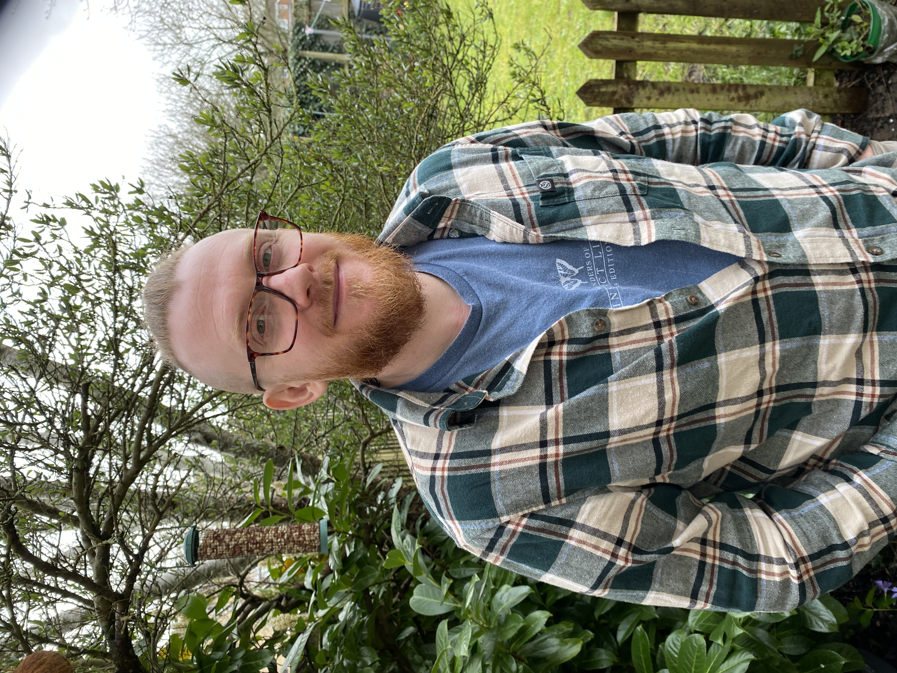
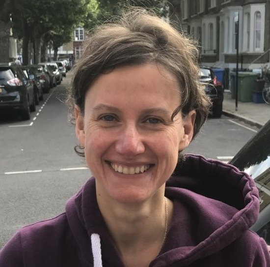
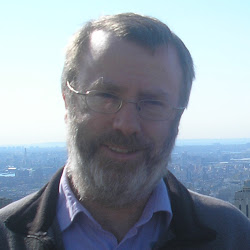

People
See here for current opportunities to join the team.
The Team
Tim Newbold

Tim is the Principal Investigator of the Global Biodiversity Change group at UCL. He is interested in understanding and predicting global biodiversity changes, and the consequences of biodiversity changes for human societies. Email Tim.
Lucy Holland (2024 - )
Lucy is a research assistant working on the GLITRS Project, investigating climate change impacts on insect species. Email Lucy.
Junghyuk (Daero) Keum (2024 - )
Daero is doing a PhD investigating the impacts of climate change and land use on reptile biodiversity. Email Daero.
Rudai (Fred) Zan (2024 - )

Fred is doing a PhD, investigating lagged effects of climate and land-use change on vertebrate species. Email Fred.
Rodolfo Assis Magalhães (2023 - )
Rodolfo is doing a PhD with me and Marcus Rowcliffe, funded by a UCL Graduate Research Scholarship, investigating the impact of land use and climate change on biodiversity and activity patterns in South American mammals. Email Rodolfo.
Daan Scheepens (2023 - )
Daan is doing a PhD with me and Robin Freeman, funded by the London NERC DTP, exploring how biodiversity change will impact the provision of pollination and pest control services. Email Daan.
Jack Rawden (2025 - )
Jack is doing a PhD, mainly supervised by Marco Springmann in the Institute for Global Health, investigating impacts of biodiversity loss on ecosystem functioning and services.
Romuald Tcheutchoua (2022 - )
Romuald is doing a PhD on pest control by wasps in maize agroecosystems in Cameroon, supervsised mainly by Seirian Sumner. Email Romuald.
Grace Moore (2023 - )
Grace is doing a PhD on rewilding, mainly with Gemma Harvey at Queen Mary. Email Grace.
Justin Isip (2022 - )
Justin is doing his PhD, mostly with Andy Purvis at the Natural History Museum, investigating how human activities are changing the structure of insect communities. Email Justin.
Carolina Campos Santos (2021 - )
Carolina is doing a PhD, working mainly with Carole Dalin, in the UCL Institute for Sustainable Resources. Carolina is developing a composite indicator of biodiversity change. Email Carolina.
Jiayu Tang (2025)
Jiayu is doing a masters project as part of her MSc in Ecology, Climate Change & Health, investigating the effects of climate change and land use on beetle functional diversity.
Yifei Guo (2025)

Yifei is conducting a masters research project with me, as part of UCL's MSc in Ecology & Data Science, investigating climate change impacts on insect biodiversity.
Tadhg Carroll (2024 - 2025)
Tadhg did a short post-doctoral project with me, investigating interactive effects of climate change and land use on biodiversity globally. Tadhg is now working with Dan Maynard in the People & Nature Lab of the Centre for Biodiversity & Environment Research Email Tadhg.
Charlie Outhwaite (2018 - 2024)

Charlie spent six years in our research group, most recently working on our NERC-funded GLITRS Project, investigating the drivers and consequences of insect biodiversity declines, and previously on the BIOTA Project. Charlie is now a research fellow at the Zoological Society of London.
Lizzie Boakes (2018 - 2024)
Lizzie worked on the TRADE Hub and BIOTA Project, investigating the impacts of global trade on biodiversity. Lizzie is now working at the RSPB.
Silvia Ceausu (2020 - 2024)

Silvia worked on the GCRF-funded TRADE Hub, investigating the impacts of global trade on biodiversity. Silvia is currently working on the SHEFS Project, still based at UCL.
Adrienne Etard (2018 - 2023)
Adrienne completed a Royal Society-funded PhD, investigating how species' traits influence their responses to climate and land-use change. She then conducted post-doctoral research with the TRADE Hub, investigating the risks to global trade from biodiversity loss. Adrienne is now working in the Biodiversity, Ecology & Conservation Group at the International Institute for Applied Systems Analysis.
Gonzalo Albadejo Robles (2018 - 2023)

Gonzalo completed a PhD, investigating land use and climate impacts on vertebrate biodiversity, and then continued with this work in a post-doctoral position, as part of my land use, climate change and biodiversity project. Gonzalo is now undertaking post-doctoral research at the Natural History Museum.
Tania Barychka (2020 - 2022)
Tania worked on our Leverhulme-funded project combining the Madingley General Ecosystem Model with Ecological Neutral Theory to predict the impacts of human activities on the world's terrestrial ecosystems. Tania now works for Environment Canada.
Abbie Chapman (2018 - 2022)

Abbie worked on the GCRF-funded SENTINEL Project, investigating biodiversity-agriculture trade-offs in Zambia, Ethiopia and Ghana. Abbie is now a post-doctoral researcher on the SHEFS Project at UCL.
Georgina Adams (2017 - 2022)
Georgina worked on the SENTINEL Project, developing scenarios of future biodiversity change in Zambia, Ghana and Ethiopia, and previously also worked on our Dynamics of African Ecosystems Project. Georgina now works at the Centre for Environment, Fisheries and Aquaculture Science (CEFAS).
Monica Ortiz (2018 - 2020)

Monica worked on our NERC-funded BIOTA Project. Monica is now an Assistant Professor at the Universidad de Concepción in Chile.
Chloe Metcalfe (2020 - 2024)

Chloe completed a PhD in the Global Biodiversity Change group, supervised also by Terry Dawson, funded by the London NERC DTP, investigating the effectiveness of protected areas. Chloe is now a statistical analyst at Forest Research.
Joe Millard (2018-2021)

Joe did a PhD, together with Robin Freeman at ZSL and Richard Gregory at RSPB, funded by the London NERC DTP, investigating how climate and land use influence pollinator communities. Joe is now a research fellow at the University of Cambridge.
Jessica Williams (2017 - 2021)

Jess did a Royal Society-funded PhD, studying how climate modifies the response of biodiversity to land use. Jess is now a research fellow at Imperial College London.
Rory Gibb (2017 - 2020)
Rory did a PhD, mainly working with Kate Jones, investigating the effect of environmental change on disease risk. Rory is now a research fellow at UCL.
Guilherme Ferreira (2018 - 2019)
I helped to supervise Gee for the last few months of his PhD project, investigating the effectiveness of protected areas in conserving mammal populations in Brazil. Gee passed his viva in July 2019, and continued with a post-doc at UCL working on the Biome Health Project with Kate Jones.
Shunxiang Fan (2023 - )
Sunxiang visited for a year during his PhD at China Agricultural University, based with us for a year researching the impacts of land use and atmospheric nitrogen deposition on biodiversity.
Jianqiao Zhao (2022 - 2023)
Jianqiao visited us as part of her PhD at Tsinghua University, based with us for a year to investigate the impacts of land-use changes on biodiversity in agricultural systems and protected areas.
Chenchen Ding (2022 - 2023)
Chenchen visited the group as part of his PhD at Beijing Normal University, based with us for a year researching the vulnerability to heatwaves of birds in arid environments.
Sophie Jones (2024 - )
Sophie undertook a masters research project in the group, predicting how climate and land-use change might impact bee species in South America.
Isabelle Leconche (2024 - )
Isabelle completed her masters project in the group, focusing on the role of deforestation in mediating interactive effects of climate change and land use on biodiversity.
Riley Beskeen (2024 - )
Riley did a masters project on interactive effects of climate change and urbanization on insect biodiversity.
Shuai Yue (2024 - )

Shuai completed a masters project on land-use-climate interactions and insect biodiversity.
Maria Klimczak (2023 - )

Maria did a masters project with Silvia investigating how field size influences levels of biodiversity within agriculture.
Shrishti Sinha (2023 - 2024)
Shrishti visited from BITS Pilani in India to undertake a masters project, contributing to our efforts to predict the impacts of land-use change and climate change on insect biodiversity.
Eva Lyu (2023 - 2024)
Eva undertook some project work in the group while she was a student at UCL. She investigating the impacts of climate change and land use on insect species. Eva is now working in the Centre for Biodiversity and Global Change at Yale University.
Aubane Carre de Malberg (2023)
Aubane did a masters project with Gonzalo, investigating human impacts on island biodiversity.
Anna Klein (2023)
Anna visited from the Free University of Amsterdam, to conduct a masters research project, investigating how hemipteran (bugs) and dipteran (flies) pest predators respond to land use.
Kyra Smith (2022)
Kyra undertook a visiting masters project with us (visting from the University of Bologna), working with Tim and Charlie, investigating differences in responses of different insect groups to climate change and land use. We are now working to publish Kyra's research.
Sharif Khalid (2022 - 2023)
Sharif did his masters project with Adrienne and Tim, investigating the impacts of climate change and land use on vertebrate pollinators and pest predators.
Rudai (Fred) Zan (2023)
Fred did a masters project with Tim, investigating how land-use history shapes biodiversity responses to current land-use differences.
Ciara Duggan (2022)
Ciara worked mainly with Jess Williams, exploring the interacting impacts of climate change and land use on zoonotic disease hosts.
Holly Souza-Newman (2021 - 2022)
Holly conducted her masters project in the group, investigating the impacts of land use on species that control agricultural pests.
Lauren Cocker (2022)
Lauren undertook a masters project with Charlie, investigating trends in UK ladybirds.
Kin Nok (Stanley) Chan (2022)
Stanley did a masters project with Tim, investigating how biodiversity responds to forest cover loss in different biomes of the world.
Dingding Liu (2021)
Dingding did a masters project with Lizzie, exploring the social impacts of Chinese imports of agricultural commodities.
Sam Bengtsson-Gartner (2020 - 2021)
Sam did a masters project with Silvia, investigating alignment of stakeholder and researcher interests in ecosystem services.
Charlotte Benham
Charlotte did a masters project with Charlie Outhwaite, investigating the impact of landscape natural habitat availability on agricultural biodiversity.
Bjorn Franke
Bjorn did a masters project with Georgina Adams, investigating the effect of animal migrations on ecosystem structure using the Madingley Model.
James Hatry
James did a masters project with Lizzie Boakes, looking at the effect of international trade on biodiversity and social indicators.
Tasmin Alexander (2020)
Tasmin did a masters project, investigating the impact of large-scale land acquisitions on biodiversity.
Peter McCann (2019 - 2020)
Peter did a masters project, investigating the interactions between biodiversity, agriculture and global commodity trade. We are preparing Peter's work for publication.
Rhiannon Osborne-Tonner (2019 - 2020)
Rhiannon did a masters project, looking at how vertebrate diets influence their response to land-use change. Rhiannon's work contributed to a paper we are preparing on species' responses to land-use change.
Susie Cramp (2018 - 2019)
Susie did a masters research project, exploring impacts of land use on the phylogenetic diversity of vertebrates. Susie is now doing a PhD at the University of Western Australia.
Diego Garcia-Vega (2017-2018)
Diego did a masters research project, investigating the impact of land-use change on biodiversity in the world's drylands. Diego's work was published as a paper in Biodiversity & Conservation. Since graduating Diego has done internships with the United Nations, and is now completing another masters degree at Sciences Po in Paris.
James Johnston (2019)
James did an masters project, investigating the impacts of cocoa on tropical biodiversity. James will soon be starting a PhD project at Cambridge University.
Georgie Hislop (2019)
Georgie did a masters project, working on the SENTINEL Project.
Philippa Oppenheimer (2019)
Philippa did a masters project, investigating how biodiversity responses to land use differ among the biomes of the world. Philippa's work formed part of a paper we published in Nature Ecology & Evolution
Louise Sykes (2018)
Lou did a masters research project, exploring whether rare and common species respond differently to land use. Lou's work was published as a paper in Conservation Biology. Lou is now working for the Hampshire Wildlife Trust.
Robyn Kinnersley (2018)
Robyn did a masters research project, investigating responses of European pollinator species to land use. Robyn's work contributed to a paper just accepted for publication.
Sophie Morrill (2017)
Sophie did a masters project with me, exploring how the ecological traits of reptile species influence their responses to land use. Sophie's work contributed to a paper we published in Global Ecology & Biogeography. Sophie now develops Natural History television programmes.
Rungtip Wonglersak (2016)
Rungtip did a masters research project investigating the effects of climate change on ecosystems using the Madingley Model. Rungtip is currently doing a PhD joint between the University of Southampton and the Natural History Museum.
Laura Bentley (2015)
Laura did an internship at UNEP-WCMC, using the PREDICTS Project data to investigate whether responses of species to land use vary depending on trophic level. Laura's work contributed to a paper we published in Functional Ecology. Laura is now doing a PhD at the University of Cambridge.
Martin Jung (2014)
While at UNEP-WCMC, I co-supervised Martin's masters project at the Centre for Macroecology, Evolution and Climate at Copenhagen University. He compared the estimates of the effects of land use made by the models of the PREDICTS Project with new data he collected in Kenya and Tanzania. Martin's work was published as a paper in Animal Conservation. Martin completed a PhD at the University of Sussex, and is now working as a post-doctoral researcher at the International Institute for Applied Systems Analysis in Vienna.
Katie Threadgill (2014)
Katie did an internship at UNEP-WCMC, collating data on biodiversity before and after a land-use change. Katie is now doing a PhD in York University
Rebecca Senior (2013)
Rebecca did an extended internship at UNEP-WCMC, working on various projects. Rebecca's work contributed to the first global PREDICTS paper. Rebecca completed a PhD at Sheffield University, and is now a post-doctoral researcher at Princeton University.
Edwin Pynegar (2012)
Edwin did an internship at UNEP-WCMC, in which he collected data with which to evaluate the predictions of the The Madingley Model and contributed to the early data collection for the PREDICTS Project. Edwin contributed to the first PREDICTS paper, on land-use responses of tropical forest species. Edwin completed a PhD at Bangor University, and is now working at the Fundación Natura Bolivia NGO.
Abigayil Blandon (2012)
Abigayil did an internship at UNEP-WCMC, contributing to the early data collection of the PREDICTS Project. Abigayil contributed to the first PREDICTS paper, on land-use responses of tropical forest species. Abigayil spent some time working for the UK's Joint Nature Conservation Committee, completed a masters at the Stockholm Resilience Centre, and now works as a seafood policy officer at WWF-UK.
Robert Wilson (2011)
While at UNEP-WCMC, I supervised Robert's masters project with the now-discontinued Mathematics in the Living Environment (MILE) Programme at the University of York. Robert's project investigated spatial patterns in the average body mass of amphibian communities in Europe. Robert completed a PhD and some post-doctoral reseach at the University of Strathclyde and is now working at the Plymouth Marine Laboratory.
External Collaborators
Andy Purvis
Andy was the Principal Investaigator of the PREDICTS Project, on which I used to work full time. We are both now co-investigators on the GLITRS project on insect declines. Andy is based at the Natural History Museum in London.
Carole Dalin

Carole was a co-investigator on the BIOTA Project, investigating interactions between biodiversity change and agriculture. Carole is based at UCL's Institute for Sustainable Resources.
Jeremy Kerr
Jeremy and I have collaborated for a few years, on a project investigating the impacts of land-use change and climate change on bumblebee biodiversity in North America and Europe.
Ben Collen
Ben was the Principal Investigator on the Dynamics of African Ecosystems Project, which I am now leading. Tragically, Ben died of bone cancer in May 2018. Please consider making a donation for research on this under-studied form of cancer.
Nick Isaac

Nick leads the Global Insect Threat-Response Synthesis (GLITRS) Project, which is investigating the drivers and consequences of global insect declines.
Barbara Adolph
Barbara led the SENTINEL Project, which explored the social and environmental trade-offs of agriculture in Zambia, Ethiopia and Ghana. We are currently finishing up a few outputs from this project.
Neil Burgess
Neil leads the TRADE Hub, which is exploring the environmental impacts of international trade.
James Rosindell

James leads a project, in which we are combining the strengths of Ecological Neutral Theory and the Madingley Model, to make better predictions of global biodiversity change. James is based at Imperial College London.
Mike Harfoot

Mike and I collaborate on the Madingley Model, and also on the TRADE Hub. Mike is based at the United Nations Environment Programme World Conservation Monitoring Centre in Cambridge.
Sam Hill

Sam and I collaborate together on the PREDICTS Project, and on the TRADE Hub. Sam is based at the United Nations Environment Programme World Conservation Monitoring Centre in Cambridge.
Derek Tittensor

Derek and I collaborate on the development of the Madingley Model. Derek is based at Dalhousie University in Halifax, Canada.